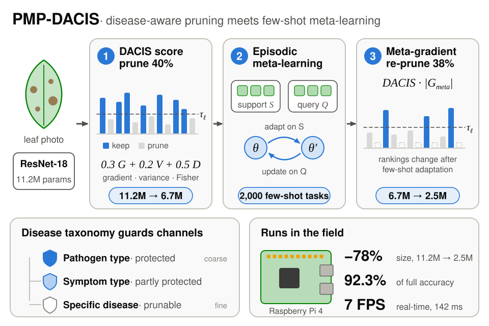

On 5 January we posted Meta-Learning Guided Pruning for Few-Shot Plant Pathology on Edge Devices. I am the first author, with Shahnawaz Alam, Mohammed Kaif Pasha, Dr. Tasneem Bano Rehman, Dr. Fahmina Taranum and Afroze Begum.
The setting: a farmer finds an unfamiliar blight, has no lab nearby and no reliable connection. The model has to run on a cheap board and learn a new disease from one to ten photos.
What we changed
Standard pruning keeps a channel because of its weight magnitude, or because the pruned layer still reconstructs its output. Neither asks whether the channel helps tell early blight from late blight, and with a handful of examples per class that is the property worth protecting.
DACIS (disease-aware channel importance scoring) adds Fisher's discriminant ratio across disease classes to a gradient term and an activation-variance term. The PMP pipeline prunes conservatively, meta-learns, then prunes again using the meta-gradients. Pruning once from ImageNet weights would keep the channels ImageNet cared about.
{kind=link}

What the paper reports
ResNet-18 goes from 11.2M to 2.5M parameters and runs at 142 ms per image on a Raspberry Pi 4, 3.6 times faster than the full model. At 30% of the parameters it is 3.8 points ahead of Meta-Prune in 5-way 1-shot and 5-shot accuracy.
Where it stops
- Every crop we tested belongs to one plant family: tomato, potato and pepper.
- PlantVillage photos were taken in a lab. Our domain-shift split is a proxy for field conditions, not a field study.
- The pruned model makes the same mistakes as the full one. Early versus late blight is still the most confused pair.
More detail, tables and the device measurements are on the project page.